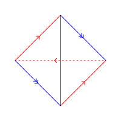

Generalised triangulations of $3$-manifolds
$\mathcal{T} = (\mathbf{\Delta},\Phi)$
$\mathbf{\Delta}$ is a disjoint union of linear tetrahedra
$\Phi$ is a collection of isomorphisms of pairs of triangular faces
William Hobkirk
The University of Sydney
Geometry and Topology Seminar · 14/10/2026
$\mathcal{T} = (\mathbf{\Delta},\Phi)$
$\mathbf{\Delta}$ is a disjoint union of linear tetrahedra
$\Phi$ is a collection of isomorphisms of pairs of triangular faces

Definition
Let $M$ be a $3$-manifold. The complexity $c(M)$ of $M$ is the minimal $n$ such that $\exists \mathcal{T}, |\mathcal{T}|=M$ with $n$ tetrahedra.
Minimal triangulations are triangulations that obtain this minimum.
Theorem 6.1, Jaco and Rubinstein (2002)
If $M$ is closed, orientable and irreducible and $M\not\in \{S^3, \mathbb{R}\mathrm{P}^3,L(3,1)\}$ then any minimal triangulation of $M$ must have a single vertex.
Orientable $3$-manifolds that admit genus $1$ Heegaard decompositions.
$L(p,q)$ is obtained by identifying two solid tori such that a meridional curve of one is identified with a $(p,q)$-torus knot on the boundary of the other.
The maximum Euler characteristic of a connected non-orientable surface embedded in $L(2n,1)$ is $2-n$.
Jaco, Rubinstein, Tillman (2008)
Proved using canonical non-orientable surfaces realising the non-trivial class of $H_2(L(2n,1);\mathbb{Z}_2) = \mathbb{Z}_2$.
Recipe:
$X$ has a fundamental class $[X] \in H_2(\mathbb{Z}_3)$ determined by the fundamental class $[X_{cut}]\in H_2(X_{cut},\partial X_{cut};\mathbb{Z})$.
If $X\subset M$ we say $X$ represents the image of $[X]$ in H_2(M;\mathbb{Z}_3)$.
If $M$ is a compact orientable $3$-manifold then every class in $H_2(M;\mathbb{Z}_3)$ is represented by an embedded $\mathbb{Z}_3$-folded surface.
$\text{Sing}(X)$ is a circle
$\text{Int}(X)$ is an open disk
A function on homology that characterises how complicated the set of realisations of a $H_2(\mathbb{Z}_3)$ class is.
\[ ||x||_{\mathbb{Z}_3} := \max_{[X]=x} \sum_{X_0\in \pi_0(\text{Int}(X))} \max(-\chi(X_0),0)\]
Depend only on a triangulation $\mathcal{T}$ and a choice of cellular $\mathbb{Z}_3$ 1-cocycle $\varphi$ representing the dual $H^1(M;\mathbb{Z}_3)$ class.
When $\mathcal{T}$ has one vertex $S_{\varphi}(\mathcal{T})$ does not separate the ambient space.
$\chi_3(x)$ is the maximum Euler characteristic of a $\mathbb{Z}_3$-folded surface $X$ representing $x$ which does not separate the ambient space.
Lemma
If $M$ is a closed orientable $3$-manifold with $H_2(M;\mathbb{Z}_3)=\mathbb{Z}_3$ then $||x||_{\mathbb{Z}_3} = \max(0,-\chi_3(x))$.
William Hobkirk · william.hobkirk@sydney.edu.au